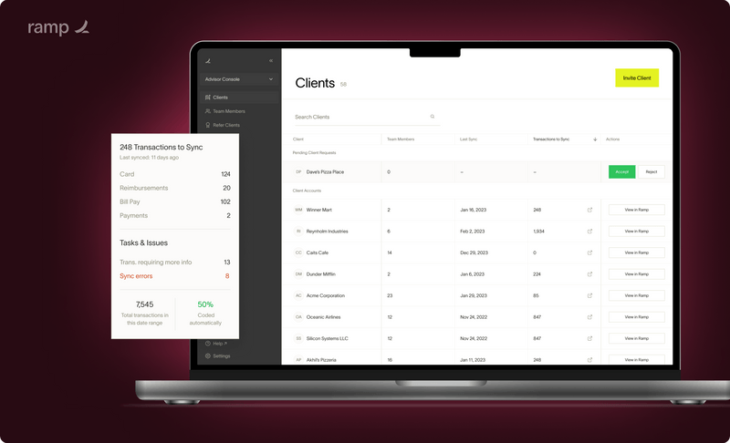

Took the Advisor Console from the initial design stages to GA launch while building and iterating on the core features to bullet-proof the product. This was a critical B2B tool enabling financial advisors to manage corporate card programs for their clients.
100+ companies onboarded within a month with numerous others requesting beta access.
Led end-to-end design from early strategy through to GA launch. Collaborated closely with product and engineering to define the core feature set, information architecture, and interaction patterns for a complex multi-tenant SaaS platform.